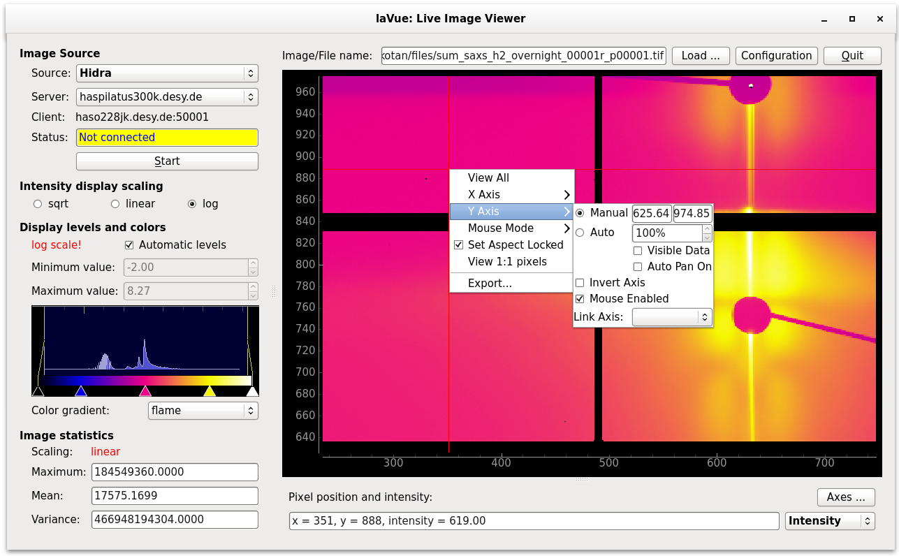

2D Plot¶
On the mouse right-click in the 2D-plot area a menu is displayed with options to adjust the plot.

View All: resizes the plot to display the whole image
X/Y Axis: adjusts parameters of axes, i.e. ranges, inversions.
Mouse Mode: selects mouse mode, i.e. 3 or 1 button
Set Aspect Locked: locks the aspect ration
View 1:1 pixels: resizes the plot to set detector pixel of screen pixel size